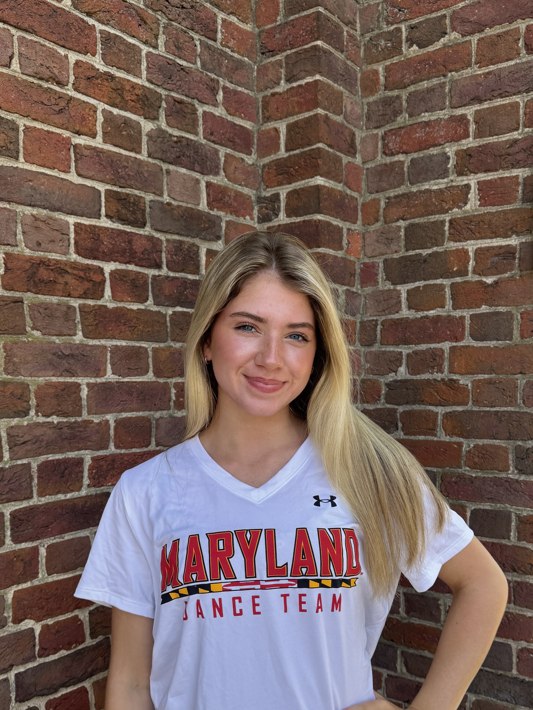

Hello! My name is Sara Kubicko and I am studying journalism at the University of Maryland. While sports journalism is my ultimate goal, I am eager to explore different areas of journalism, expand my skill set and gain as much hands-on experience as possible across a variety of reporting formats and topics. As a member of the Maryland Dance team, I love being part of the sports atmosphere and experiencing firsthand the energy, dedication, and teamwork. This experience fuels my interest in sports journalism.Currently, I am a beat writer for Terrapin Sports Central, covering women’s soccer during the 2026 season, and a video reporter for Stories Beneath the Shell, where I am building my skills as both a writer and multimedia storyteller. I am eager to take on new opportunities, step outside my comfort zone and take advantage of opportunities that will help me become a versatile journalist.